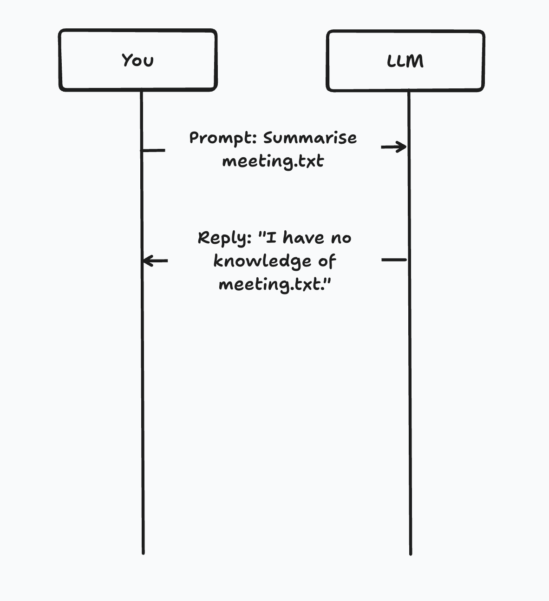
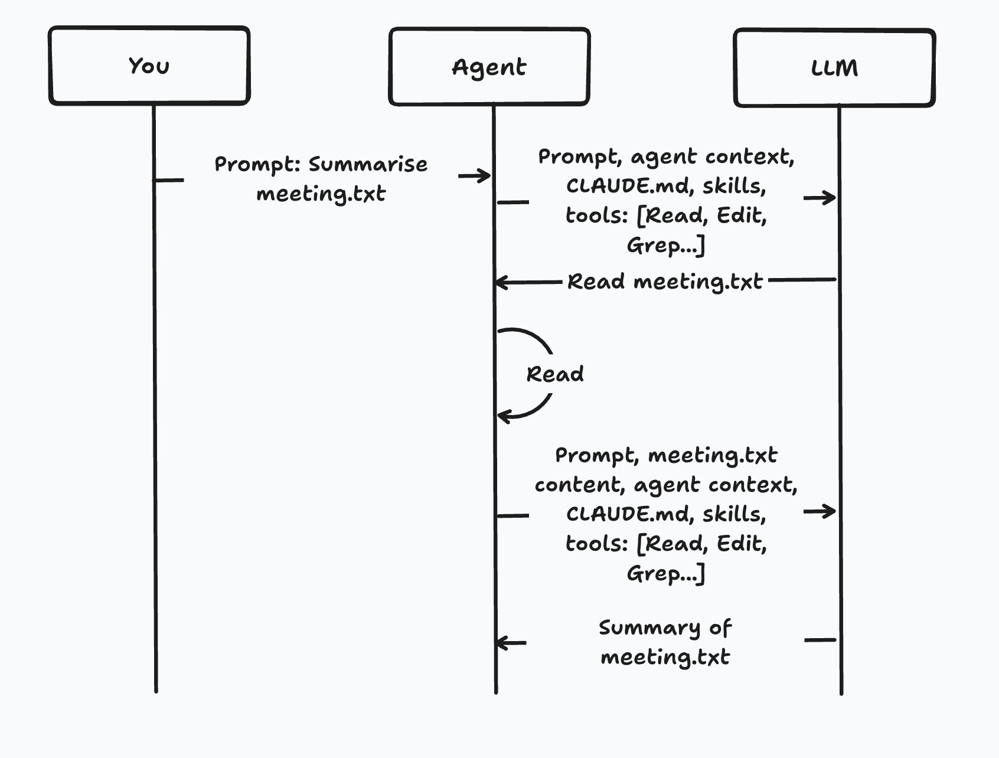
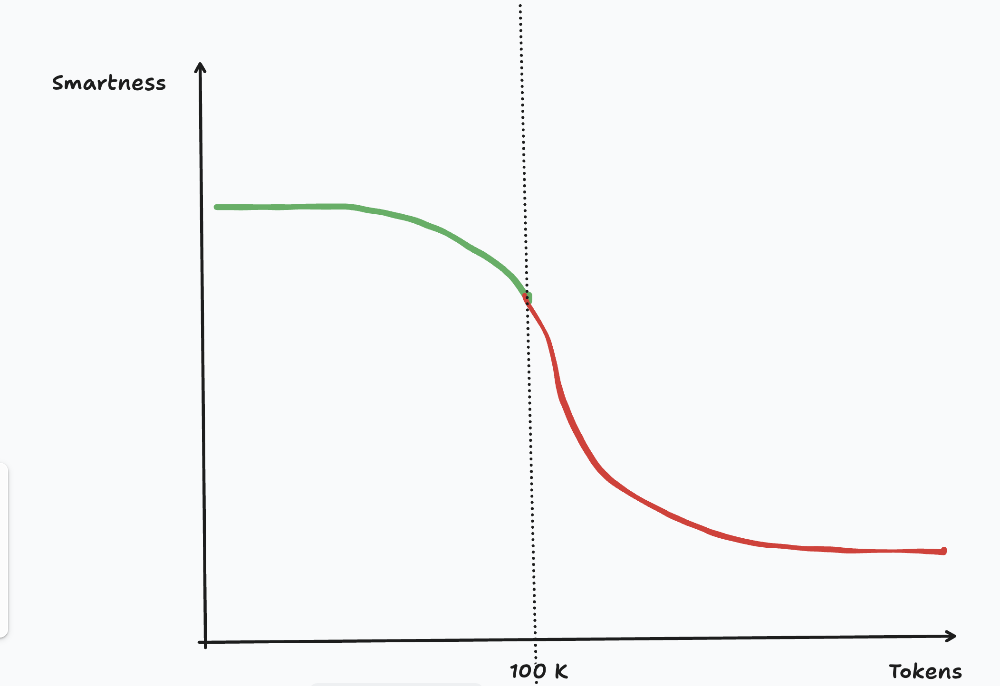

Software craftsmanship still matters in 2026
Can only answer based on prior knowledge
Can answer based on prior knowledge, the use of tools and ability to iterate


The more relevant information sent to the AI,
the better it performs
Context is finite
The AI has a limited window. What's in that window
determines the quality of the output.
As close to empty as possible.
Load what you need.
/git-commit · /query-logs · /check-ticket
/query-db · /query-metrics · /review
Keep default context tiny. Pull in the rest when needed.

| Prompt | The instruction in the current chat. It shapes the task now; if you pass one to a subagent, it is eager only for that subagent. |
|---|---|
| CLAUDE.md | Persistent instructions you write. Claude reads them at the start of every session, so they are eager-loaded by default. |
| Skill | Reusable instructions in SKILL.md. Claude can use them when relevant or you can invoke them directly; unlike CLAUDE.md, the body loads only when used. |
| Subagent | A specialized assistant that runs in its own context window, with its own system prompt, tool access, and permissions, then returns only the result. |
| Slash command | A /name entry point. It may invoke a built-in command or a skill; the slash itself is just the trigger, not the stored context. |
Organise instructions in layers.
Keep detail out of the main text — link it instead.
The agent follows the link only when it's relevant.
Less, more relevant context in the window → better results, lower cost.